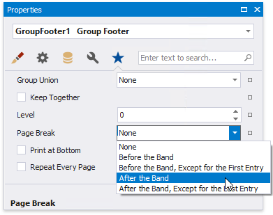
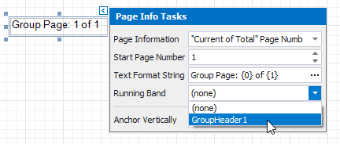
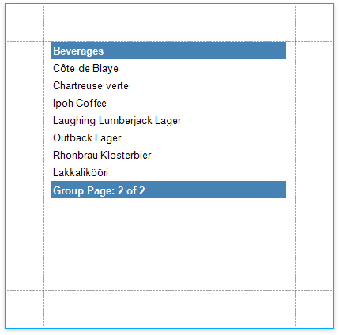

Add Page Numbers
The tutorial describes how to add page numbers to your reports.
Add Page Numbers
Do the following to add page numbers to a report:
Create a PageFooterBand in your report. To do this, right-click anywhere in the report designer, and in the context menu point to Insert Band, and then click PageFooter.

Drop the Page Info control from the Toolbox to the PageFooter band.

To change the control's display format, click its smart tag, and in the invoked actions list, specify the Text Format String property (e.g., Page {0} of {1}, to display the current page number out of the total number of pages).

The following image illustrates the resulting report:

Add Page Numbers for Groups
Do the following to make your report display page numbers for groups or detail reports:
Add the GroupFooter band. To do this, right-click anywhere on the report's surface, and in the invoked menu, point to Insert Band and click GroupFooter.

Note
You can force the group header and/or the group footer to be repeated on each page, using the GroupBand's Repeat Every Page property.
Next, force each new group to start on a separate page. Otherwise, group page numbers will be calculated incorrectly.
To do this, select the Group Footer, and set its Page Break property to After the Band.

Drop the Page Info control from the Toolbox onto the GroupFooter (or GroupHeader) band.

Select the created control, and set its Running Band property to GroupHeader1.

Tip
You can use the Text Format String and Page Information properties to adjust the way the control represents its contents.
The following image illustrates the resulting report:
